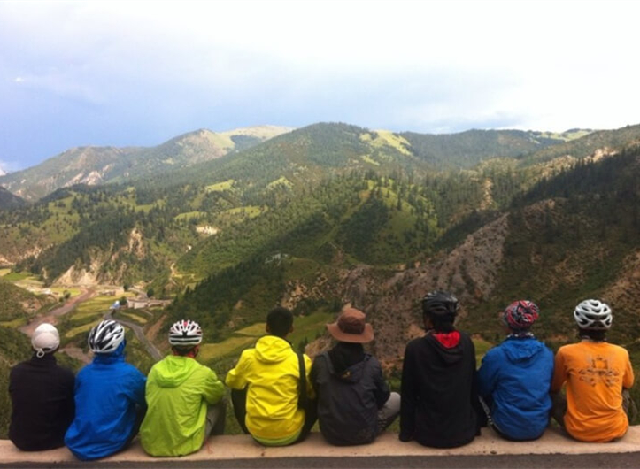

HTML & CSS

伙伴
2010.9~2014.6
技能
2015.08 - 2017.03
深圳车多网络技术有限公司专注于汽车互联网行业的新兴科技公司，以先进的互联网与移动网平台为载体，在全国近400个城市为车主提供优质、便捷的本地汽车互联网生活服务。车多网依托多年互联网、移动网开发与运营经验，完美结合位置服务、云计算、物联网技术。
前端工程师，任职公司技术部，主要负责公司App内嵌网页和公司官网，活动页的前端技术开发工作。
2014.10 - 2015.08
北京踏行天际科技发展有限公司致力于发展互联网健身数字化产品，为客户提供最好的系统健身解决方案，与专业的健身智能硬件，是一家结合智能化硬件产品与软件解决方案的健身系统供应商。
前端工程师。主要负责公司官网前端技术开发、修改、调试及维护等工作。
掌握Html/Css/JS构建web项目，掌握DIV+CSS布局、移动端自适应rem布局、CSS3 flex布局，页面结构良好，并保证不同浏览器兼容性
熟悉原生JavaScript，可使用原生js进行开发。了解面向对象机制，面向对象的函数式编程，理解闭包原理，可自行封装插件
熟悉各种前端流行框架如Bootstrap、jQuery、Angular等。熟悉移动端常用的布局以及开发技巧，熟悉响应式布局，完成页面各项功能
熟练使用Ajax和jQuery.ajax技术完成异步通讯的所有功能，以及后台数据同步或异步获取和展示，熟练定义解析JSON数据
热爱前端行业，对技术高度热情，能够独立解决问题，并根据工作需要主动钻研、学习新的技术
熟练使用Firework、Photoshop、Axure、XMind等设计相关软件
生活记录